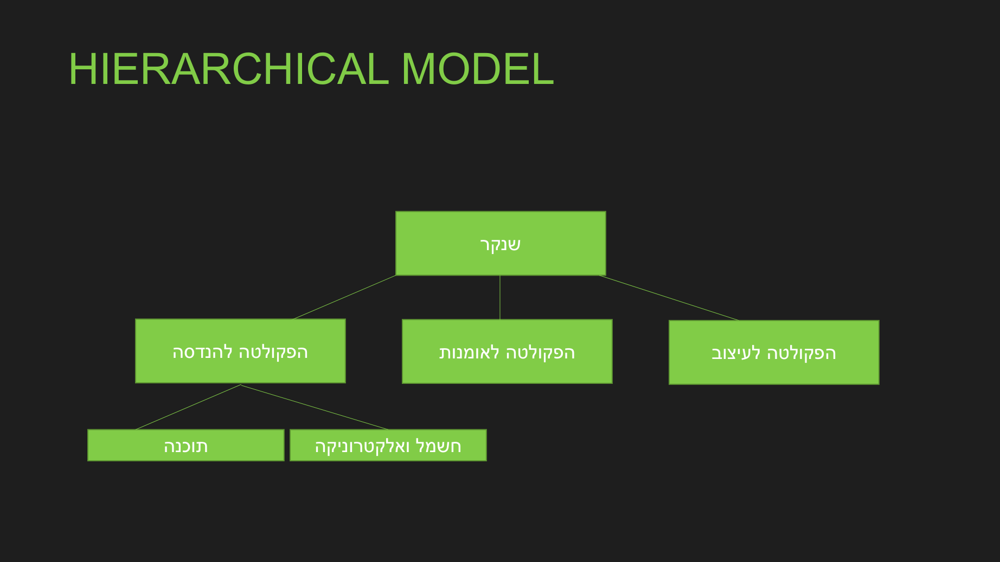
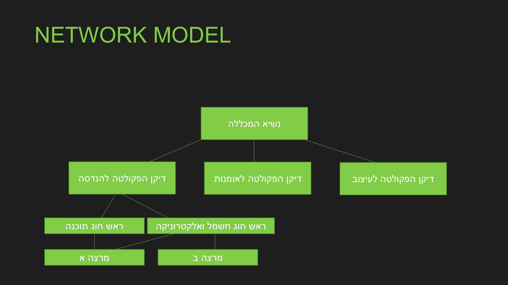
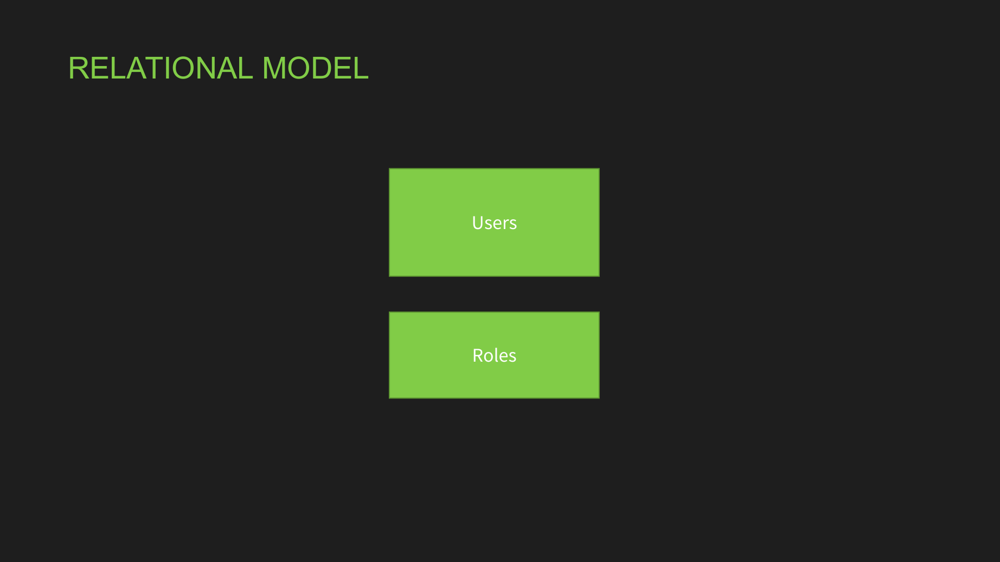

המודל הרלציוני ומפתחות
⏱ זמן משוער: 35 דק'
מודלים של נתונים
לאורך השנים היו כמה מודלים לארגון נתונים:
- מודל היררכי (hierarchical): הנתונים בעץ — לכל רשומה «הורה» אחד. גישה למידע רק דרך ההיררכיה.
- מודל רשת (network): הכללה של ההיררכי — רשומה יכולה להיות מקושרת לכמה רשומות.
- מודל רלציוני (relational): הנתונים בטבלאות; אפשר לגשת למידע ישירות (לא דרך היררכיה), והוא מבוסס על אלגברה (תורת הקבוצות).



מקור: relational_data_model.pdf
טבלאות, שורות ועמודות
במודל הרלציוני הנתונים מאורגנים בטבלאות (relations). כל שורה (tuple/record) היא ישות בודדת, וכל עמודה (attribute) היא תכונה עם טיפוס (domain). הסדר של השורות והעמודות אינו משמעותי, ובאופן תיאורטי אין שתי שורות זהות לחלוטין.
הסכמה המלווה את הקורס (מהמצגת) — חמש רלציות של שנקר:
student (s_id: INT, s_name: STRING, s_address: STRING, s_status: STRING)
lecturer(l_id: INT, l_name: STRING, dept_id: DEPTS)
course (c_code: INT, c_name: STRING, dept_id: DEPTS, c_descr: STRING)
register(c_code: COURSES, s_id: INT, grade: INT, semester: INT)
department(d_code: DEPTS, d_name: STRING, d_descr: STRING)מקור: relational_data_model.pdf
מפתחות
מפתח-על (Super Key): קבוצת עמודות שמזהה שורה ביחידות. מפתח מועמד (Candidate Key): מפתח-על מינימלי. מפתח ראשי (Primary Key): המפתח המועמד שנבחר — ייחודי, לא-NULL, אחד לטבלה. מפתח זר (Foreign Key): עמודה שמצביעה על מפתח ראשי בטבלה אחרת ויוצרת את הקשר.
כך זה נראה ב-SQL — הדוגמה מהמצגת (מפתח ראשי + מפתח מועמד עם UNIQUE):
CREATE TABLE department (
d_code INT,
d_name CHAR(20),
d_descr CHAR(100),
PRIMARY KEY (d_code),
UNIQUE (d_name) -- מפתח מועמד: גם שם המחלקה ייחודי
);מקור: relational_data_model.pdf
שלמות (Integrity)
- שלמות ישויות (Entity Integrity): מפתח ראשי לא יכול להיות NULL.
- שלמות התייחסות (Referential Integrity): ערך מפתח זר חייב להתאים לערך מפתח ראשי קיים, או להיות NULL.
- שלמות תחום (Domain): כל ערך שייך לטיפוס/טווח המותר של העמודה.
שלוש הדוגמאות מהמצגת — מפתח זר, NULL וערך ברירת מחדל:
CREATE TABLE course (
c_code INT,
c_name CHAR(20),
dept_id INT,
PRIMARY KEY (c_code),
FOREIGN KEY (dept_id) REFERENCES department(d_code) -- שלמות התייחסות
);
CREATE TABLE student (
s_id INTEGER,
s_name CHAR(20) NOT NULL, -- חובה ערך (אין NULL)
s_address CHAR(50), -- NULL מותר: "לא ידוע"
s_status CHAR(10) DEFAULT 'freshman', -- לא סופק ערך? יקבל ברירת מחדל
PRIMARY KEY (s_id) -- PK לעולם לא NULL
);מקור: relational_data_model.pdf
סכימה מול מופע
סכימה (Schema) היא המבנה הקבוע — שמות הטבלאות, העמודות, הטיפוסים והאילוצים. מופע (Instance) הוא הנתונים בפועל ברגע נתון. מסמנים סכימה כך: Student(id, name, dept_id→Department) — קו תחתון למפתח ראשי, חץ למפתח זר.
-- הסכימה (קבועה): student(s_id, s_name, s_status)
-- מופע (משתנה עם הזמן) — תוכן הטבלה כרגע:
-- s_id | s_name | s_status
-- 17 | Dana | senior
-- 23 | Avi | freshman
INSERT INTO student VALUES (31, 'Noa', 'freshman'); -- המופע השתנה,
-- הסכימה נשארה אותה סכימהמקור: relational_data_model.pdf
בדיקה עצמית
מהו מפתח ראשי?
מה מבטיחה שלמות התייחסות (Referential Integrity)?
מה ההבדל בין מפתח מועמד למפתח-על?
מהי שלמות ישויות (Entity Integrity)?
מה מסמן החץ ב-Employee(id, name, dept_id→Department)?